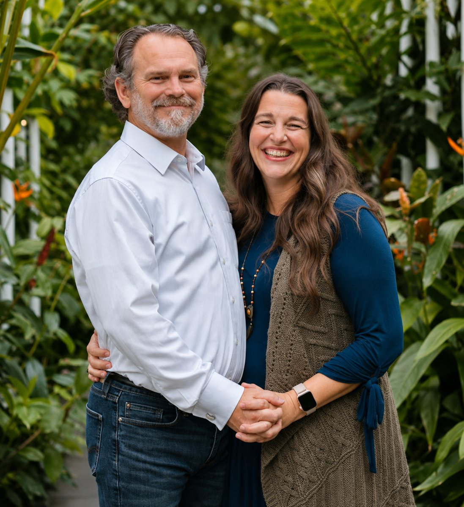

Monthly Bookkeeping
Routine transaction categorization, reconciliations, and organized books.
FAITHFUL STEWARDSHIP. ACCURATE ACCOUNTING.
Dependable bookkeeping and accounting support for small businesses, churches, and nonprofits across Northern Oklahoma.
Family-owned and faith-guided, we serve with integrity, accuracy, and personal attention.
In-person and remote consultations available
WHAT WE DO
Support that keeps your records organized and helps you understand your organization's financial picture.
Routine transaction categorization, reconciliations, and organized books.
Clear financial statements and useful reporting for owners and leadership teams.
Help bringing overdue or disorganized records up to date.
Accounts payable, receivable, and payroll-related bookkeeping support.
Practical budget preparation and ongoing financial tracking.
Internal financial reviews, records organization, and preparation for external audits or CPA review.
We do not provide independent CPA audits or tax return filing services.
ABOUT BUSTER BOOKKEEPING
Buster Bookkeeping is a family-owned business built on the belief that financial stewardship deserves both professional care and personal integrity.
Heath brings approximately 35 years of accounting experience, including extensive work with nonprofit organizations. We value clear communication, dependable records, and relationships built on trust.
Our Christian faith shapes the way we serve, and we welcome businesses and organizations of all backgrounds.

Local relationships with flexible remote service.
WHO WE SERVE
Reliable books and reporting to support everyday decisions and growth.
Thoughtful support for ministry finances, budgets, and responsible stewardship.
Financial organization and reporting that support mission-driven work.
Serving Enid, Ponca City, Pond Creek, Medford, and surrounding Northern Oklahoma communities.
LET'S TALK
Tell us a little about your business or organization. We'll follow up to arrange a free 20–30 minute introductory consultation with Heath.
Call: 405-509-4563
Meet: In person or remotely
Please don't send bank credentials, account numbers, or sensitive financial records through an inquiry.
Tell us a little about your needs. We will contact you to arrange a consultation.